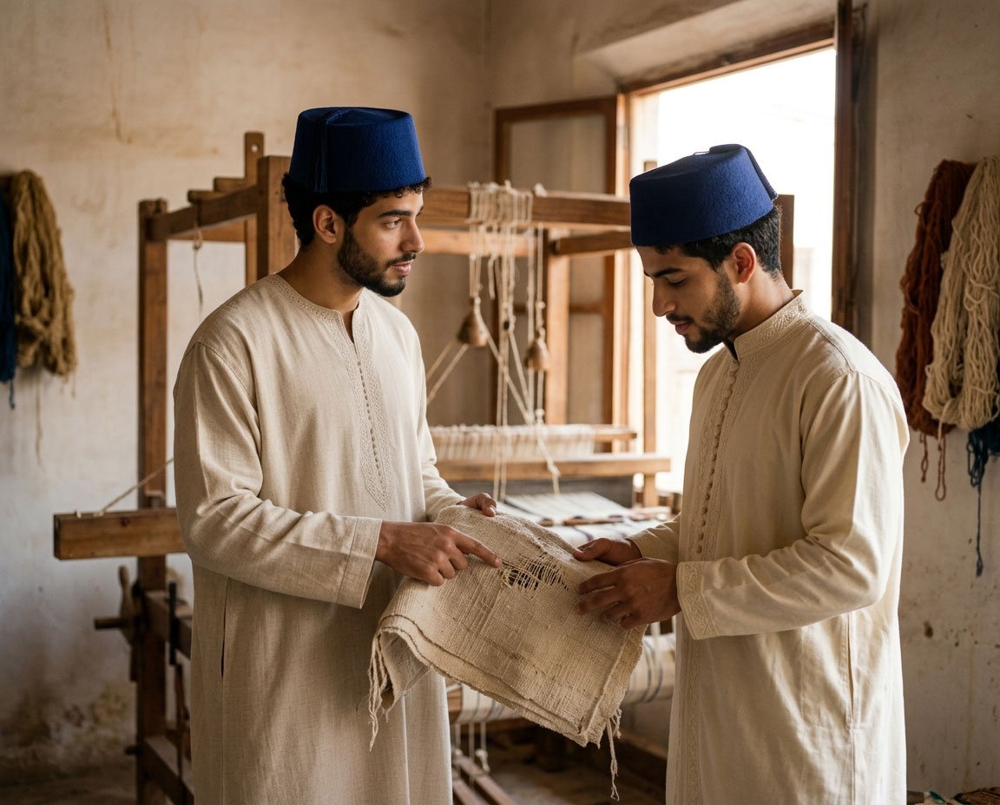
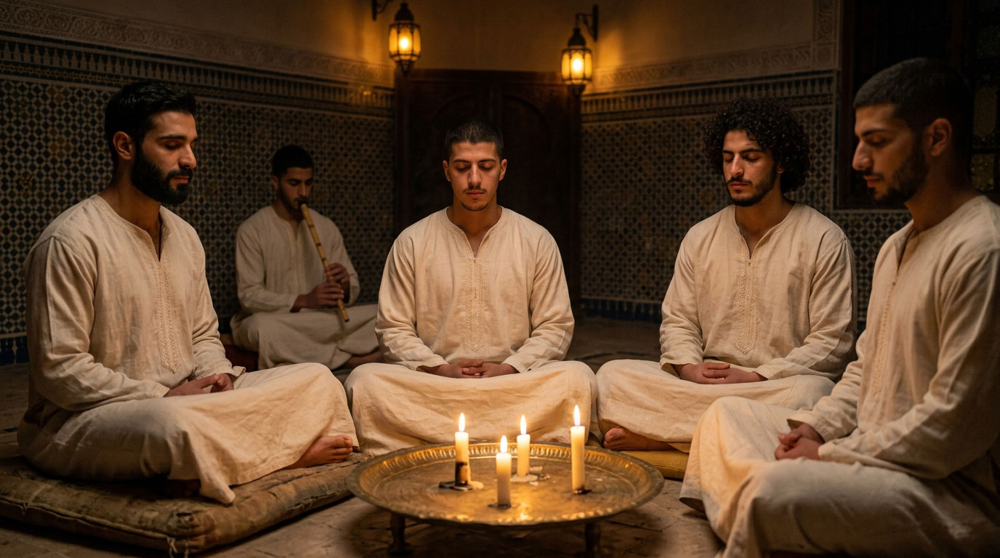
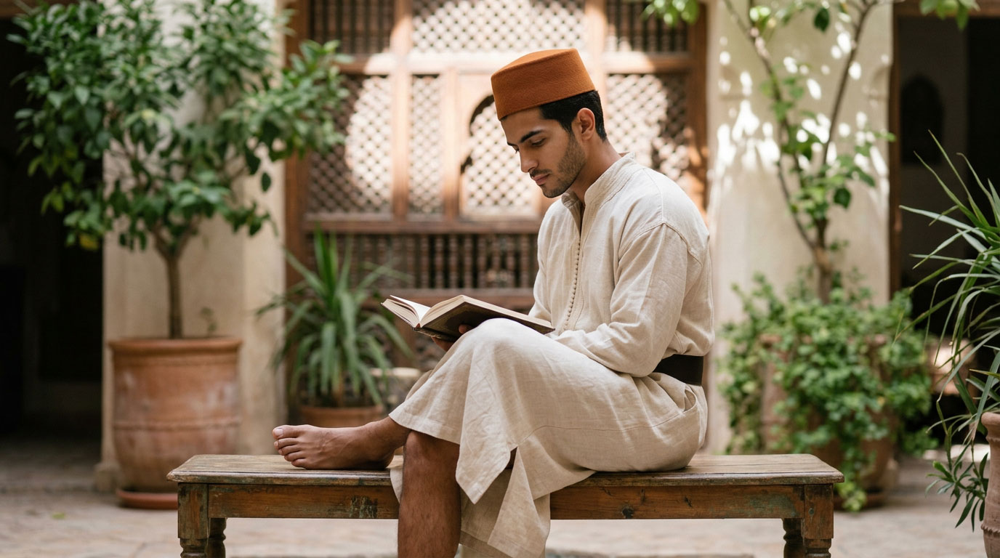

Experiences
These are not tourist products. They are measured doorways into the rhythm of the house.
The Riad does not offer a catalogue of activities. It opens, with measure, some of its gestures to those it receives: a workshop, a table, an evening, the silence of the patio.

A workshop
Observe first, sometimes take part — never interrupt. The master continues his gesture whether the guest is there or not; it is that continuity that gives the moment its value, not a demonstration staged to please him.
Zellige, perfumes, calligraphy: each workshop of Dar al-Hiraf keeps its doors open to those who know how to hold themselves in silence.
A still more discreet knowledge is passed on at the hammam: traditional massage, learned from an experienced tayeb by anyone who wishes — resident or passing guest — an art the house does not put forward, but closes to no one.

A table
The Riad meal is neither a service nor a culinary spectacle: it is the moment when residents and guests find themselves side by side, in the same silence or the same measured conversation.
أَفْشُوا السَّلَامَ وَأَطْعِمُوا الطَّعَامَ
“Spread peace and feed others.” — Prophetic tradition (Ibn Majah)
To feed is not a secondary gesture of hospitality: in tradition, it is one of its first commandments.

An evening
Music, conversation or samāʿ: the evenings that close certain days carry, in their very name, what the Riad seeks to offer — al-uns, the companionship that drives away solitude, not the noise that masks it.
One enters by the door of listening, never by that of entertainment.

The silence of the patio
No activity planned. The patio, its fountain, its shade — a time that asks nothing of the one who sits there.
مَنْ صَمَتَ نَجَا
“Whoever keeps silent is saved.” — Prophetic tradition (Tirmidhi, no. 2501)
This silence is not a void to be filled. It is, in the house, one of the most demanding gestures — and one of the rarest to find elsewhere.
Each experience belongs to the calendar of the house — never the reverse. To enter this rhythm: